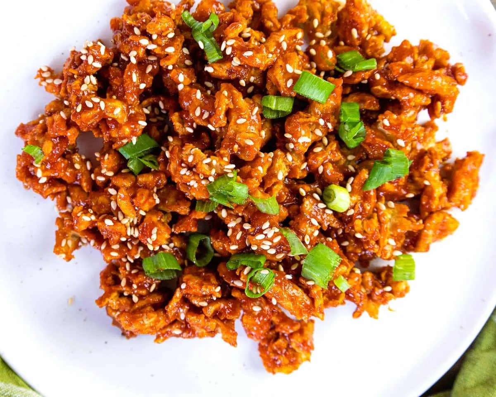

Korean sweet and spicy seitan

Description
A vegan alternative to the famous korean fried chicken. Seitan is a meat substitute made by extracting gluten
from flour, it's very easy -and cheap- to make and has been used in asian cuisine for over a millenia.
Ingredients
- Flour (600g)
- Cornstarch
- Neutral oil
- Gochujang (1tbsp)
- Sesame oil (2tbsp)
- Soy sauce (1tbsp)
- Mirin -Rice vinegar- (1tbsp)
- Honey (2tbsp)
- Sesame seeds
- Green onion
- Rice
- Salt
- Pepper
- Garlic powder
Instructions
- Make the rice in a rice cooker.
- In a bowl, mix the flour with 1/3 water (3 volume flour for 1 volume water). The dough needs to be elastic.
- Knead the dough to allow the gluten to form. The longer the kneading the better.
- Rinse the dough with cold water until only the gluten is left (the gluten -or seitan- will be a slightly
darker color than the dough)
- In a bowl, mix the cornstarch, garlic powder, salt and pepper. Cut the Seitan in bite size pieces and toss
them in the cornstarch mix.
- Heat neutral oil in a pan. When hot, add the seitan and fried until golden. Remove and set aside.
- In the pan on medium heat, add Gochujang, sesame oil, soy sauce, mirin and honey. Bring to a simmer.
- When the sauce began to thicken, add the seitan, mix to coat it.
- Serve on rice, add sesame seeds and green onions for toppings. Enjoy!